Pensé pour la sécurité. Dessiné pour être beau.
Tout est déjà réglé au premier démarrage : tu choisis ta langue et ton clavier, et GhostCat s'occupe du reste.
Vie privée par défaut
- Adresse MAC aléatoire sur chaque Wi-Fi
- DNS chiffré (Quad9 / Mullvad), compatible VPN
- Pare-feu actif, SSH coupé
- Firefox durci : anti-pistage strict, HTTPS forcé, uBlock Origin
- Ni localisation, ni historique, ni télémétrie
GhostCat Hub
Le centre de commande : tous les outils Red, Blue et Purple Team, triés, décrits, lancés ou installés en un clic. Recherche instantanée, favoris, en français et en anglais.
GhostCat Setup
Au premier démarrage, avant même le bureau : langue, clavier (avec zone de test), fuseau horaire et niveau de confidentialité. Tout est repris à l'installation.
Design Liquid Glass
Barre du haut, dock, menus et grille d'applis en verre, icônes GhostCat, animations de fenêtres et 7 fonds d'écran exclusifs. Noir profond, du boot jusqu'au bureau.
Arch Linux + BlackArch
La base rolling release d'Arch, toujours à jour, avec le dépôt BlackArch pour des milliers d'outils de sécurité supplémentaires.
Live ou installé
Essaie GhostCat depuis la clé USB sans rien toucher, puis installe-le sur un disque interne ou externe avec l'installeur guidé.
Attaquer, défendre, prouver.
Red Team
Reconnaissance, web, exploitation, Active Directory, mots de passe, Wi-Fi, reverse engineering.
Blue Team
Surveillance réseau, détection d'intrusion, pare-feu, antivirus, forensique et analyse de journaux.
Purple Team
Une boucle guidée : planifier avec MITRE ATT&CK, émuler l'attaque, vérifier la détection, améliorer la règle.
⚖️ Les outils offensifs sont réservés aux systèmes que tu possèdes ou que tu as l'autorisation écrite de tester.
À quoi ça ressemble.
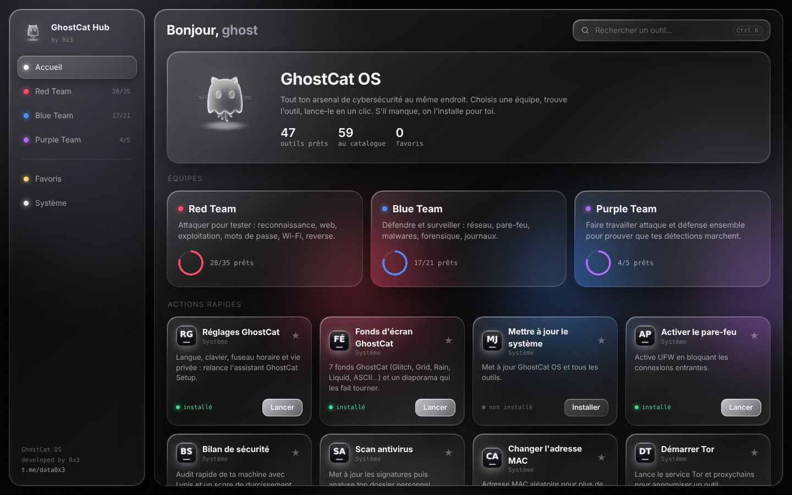
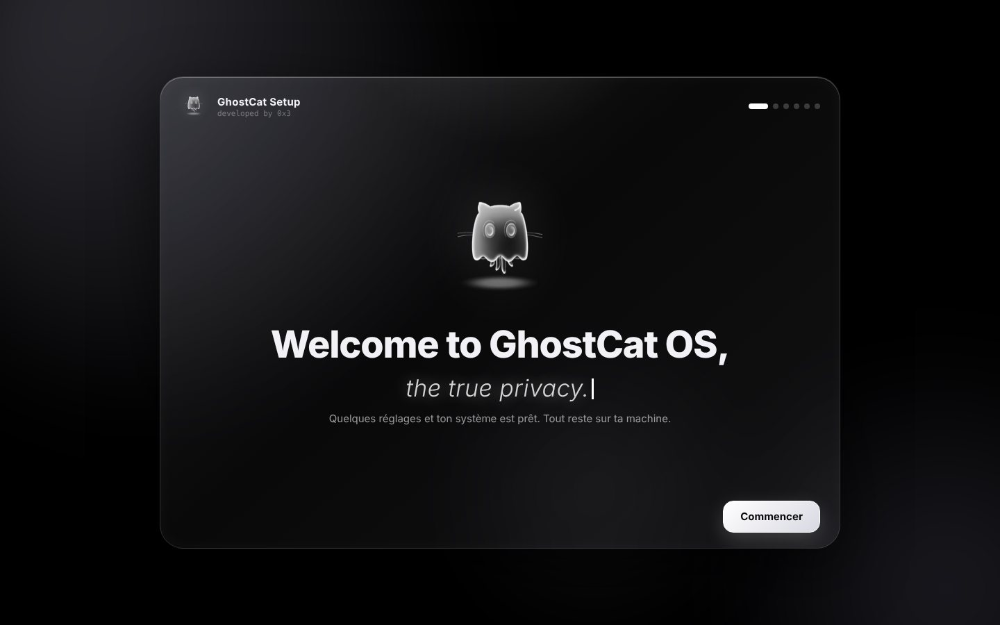
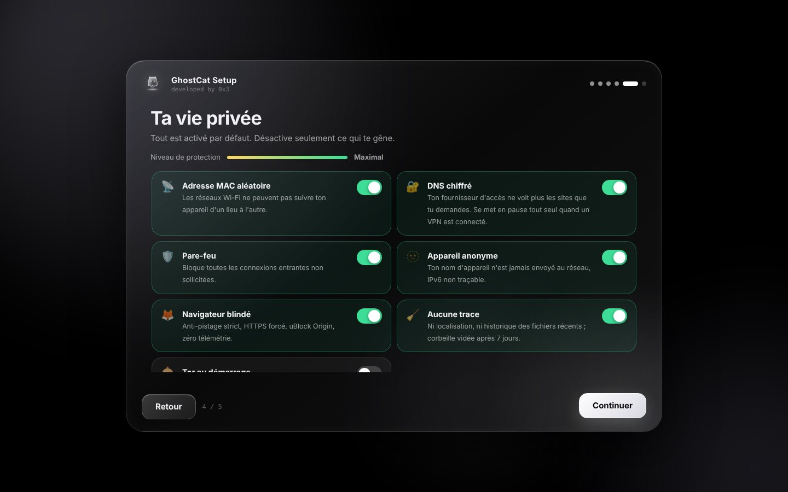
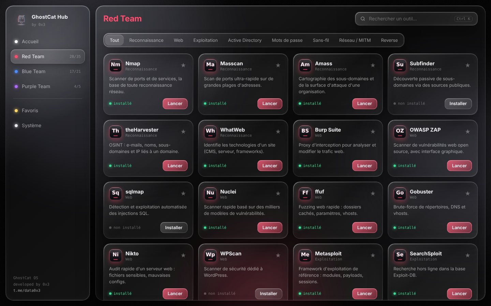
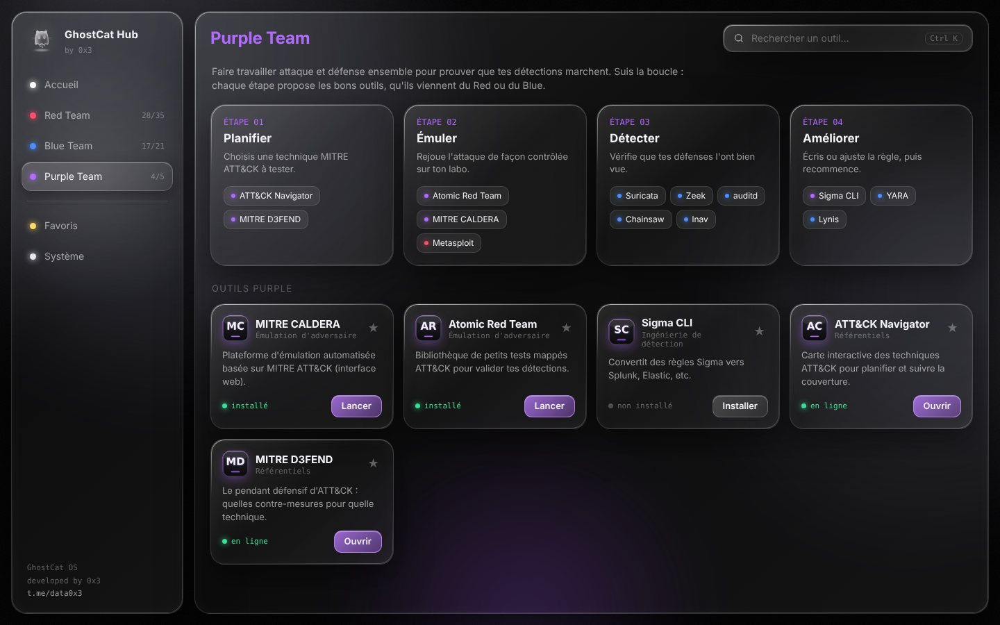
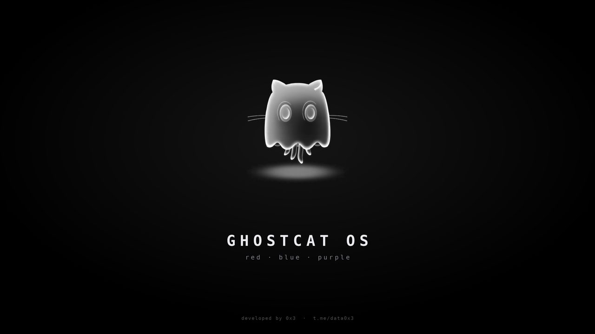
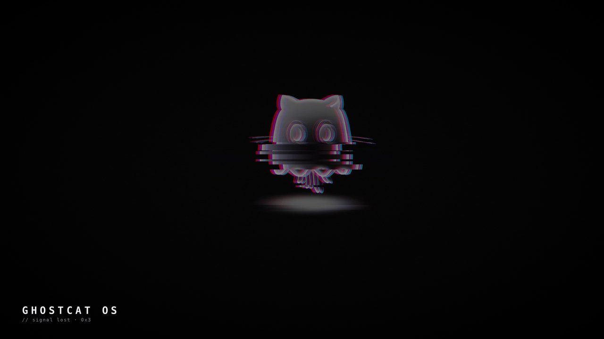
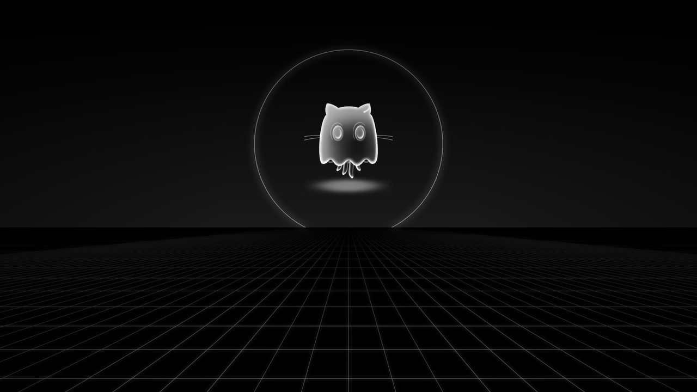
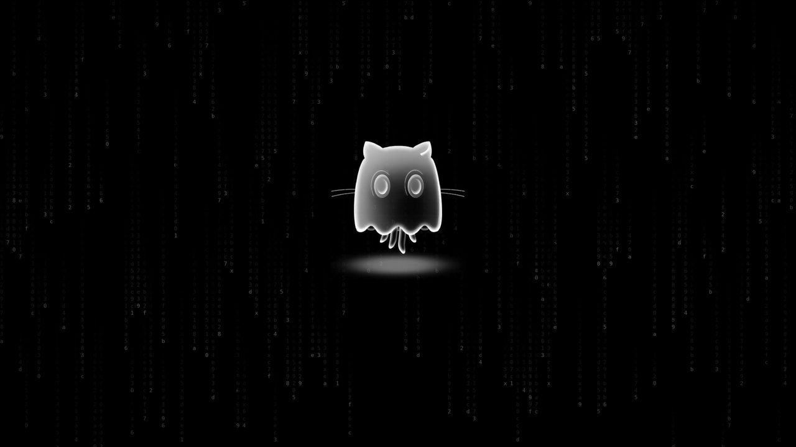
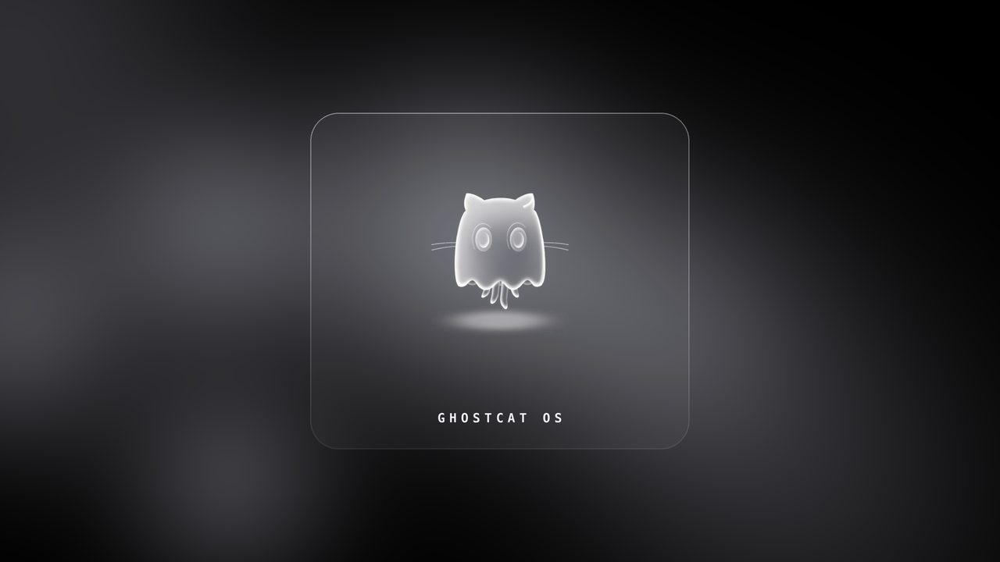
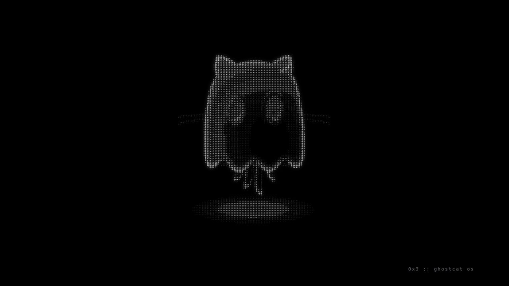
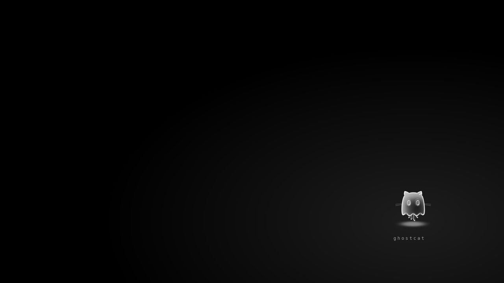
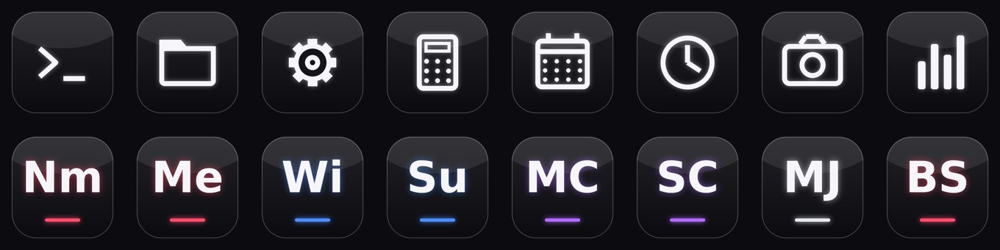
Une commande, et c'est prêt.
Le script télécharge la dernière version, recolle les morceaux et vérifie l'empreinte SHA256 tout seul. Pas besoin de passer par GitHub.
Ouvre PowerShell (clic droit sur Démarrer → Terminal) et colle :
L'ISO vérifiée arrive dans Téléchargements\ghostcat-….iso. Ensuite, grave-la avec Rufus (voir l'installation ci-dessous).
Dans un terminal :
L'ISO vérifiée arrive dans ton dossier Téléchargements.
Télécharge tous les fichiers ci-dessous, puis recolle-les :
De zéro à GhostCat en 6 étapes.
Télécharge l'ISO
Avec la commande de la section Télécharger. Elle vérifie l'empreinte SHA256 pour toi.
Grave la clé USB avec Rufus
- Choisis ta clé et l'ISO, schéma de partition GPT.
- Clique Démarrer, puis choisis « Écrire en mode Image DD ».
- Sous Linux :
sudo dd if=ghostcat.iso of=/dev/sdX bs=4M status=progress
Démarre sur la clé
- Désactive le Secure Boot dans le BIOS (souvent F2 ou Suppr).
- Au démarrage, ouvre le menu de boot (F12, F8, F11 ou Échap) et choisis la clé.
Configure avec GhostCat Setup
« Your new life is about to be born… » puis l'assistant : langue, clavier, fuseau, vie privée. Choisis Essayer pour découvrir, ou Installer.
Installe sur ton disque
- Connecte le Wi-Fi : l'installation télécharge les outils.
- Dans archinstall : choisis le bon disque (il sera effacé), disposition automatique, ext4.
- Crée ton utilisateur (superuser : oui), profil Desktop → GNOME, réseau NetworkManager.
- À la fin, réponds non au chroot : GhostCat installe le reste tout seul.
Redémarre sur GhostCat
Retire la clé, démarre sur ton disque et connecte-toi. Tes réglages sont déjà là, et le Hub t'attend.
Questions fréquentes
Est-ce que ça efface Windows ?
Non, sauf si tu choisis le disque de Windows dans l'installeur. En mode live, rien n'est écrit sur tes disques. Tu peux aussi installer GhostCat sur un disque externe et garder ton PC intact.
Pourquoi désactiver le Secure Boot ?
GhostCat n'est pas signé par Microsoft : avec le Secure Boot actif, le PC refuse de démarrer sur la clé. Tu pourras le réactiver si tu reviens à Windows seul.
Ça marche avec Mullvad ou un autre VPN ?
Oui. Le DNS chiffré de GhostCat se met en pause tout seul quand un VPN est connecté, et revient quand tu le coupes. Sur une installation plus ancienne : curl -fsSL https://raw.githubusercontent.com/data-0x3/ghostcat-os/main/tools/fix-vpn-dns.sh | sudo bash
Comment mettre à jour ?
Ouvre le Hub → Système → « Mettre à jour le système », ou tape sudo pacman -Syu. GhostCat est une rolling release : pas besoin de réinstaller.
Pourquoi l'ISO est en plusieurs morceaux ?
GitHub limite chaque fichier à 2 Go. Le script de téléchargement recolle et vérifie tout automatiquement.
C'est légal ?
GhostCat est libre et gratuit. Les outils offensifs sont légaux à posséder, mais leur usage n'est autorisé que sur tes propres systèmes ou avec une autorisation écrite.